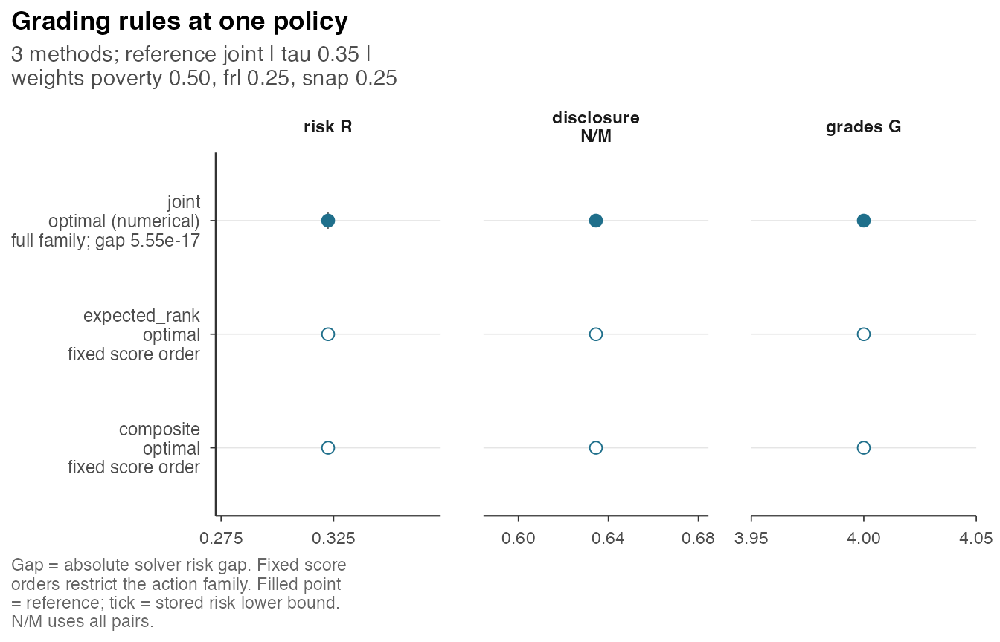
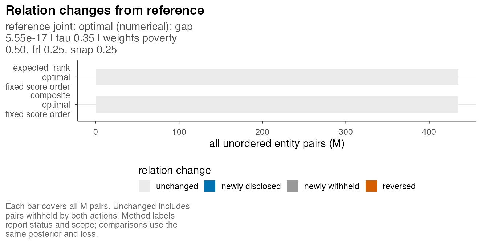
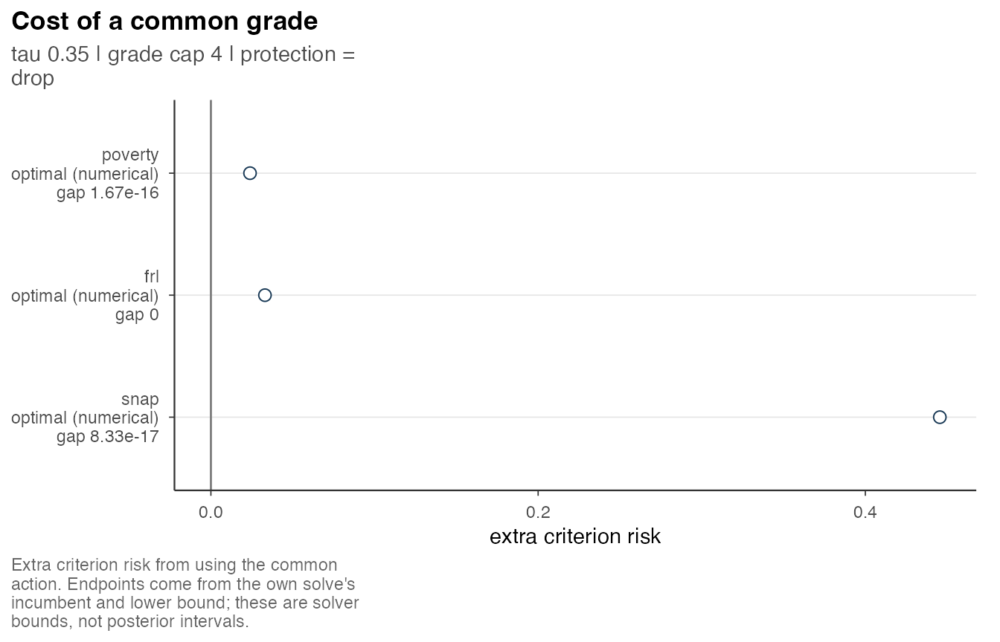

Baselines and criterion burden
Source:vignettes/baselines-and-the-cost-of-a-common-grade.Rmd
baselines-and-the-cost-of-a-common-grade.RmdThis retained 30-site example preserves the original article URL. Two bounded fixed-order dynamic programs are evaluated, and native solver results are read from prepared assets. Figures and sensitivity analysis provides a six-site introduction; Several criteria distinguishes criterion-weighted loss from loss for a composite target.
We compare a common grading with simpler rules and examine the additional risk imposed on each criterion by the common decision. All rules are evaluated using the same posterior and declared loss. Native solver results are read from source-bound caches, while the score-and-cut baselines are computed directly by dynamic programming.
library(postrank)
source(system.file("scripts", "_vignette-setup.R", package = "postrank", mustWork = TRUE), local = TRUE)
a35 <- load_or_compute("analysis_30x3_tau35")Cached asset analysis_30x3_tau35: built by the
maintainer with postrank 1.1.0 and the explicitly selected highs backend
(version 1.12.0.3) at 2026-10-30T14:15:54Z; 1 solve, recorded status
optimal. Reading it here solves nothing.
Baselines with optimal fixed-order cuts
A baseline orders entities by a specified score and partitions that
order into at most G_max contiguous grades. The cuts
minimize the same loss as the joint rule, avoiding an additional
restriction to arbitrary equal-width partitions. Two score constructions
are available:
- expected rank: the weighted posterior expected rank of each entity, computed from the same pairwise error probabilities;
- composite: a weighted sum of posterior means on declared scales and centers, with no data-based estimation of the standardization parameters.
er <- postrank_expected_rank(a35$pairwise, a35$settings$weights)
head(sort(er))
#> site003 site010 site029 site028 site027 site019
#> 9.239438 9.371562 10.953312 11.076812 11.934250 12.872750
er_cuts <- postrank_cuts(er, a35$pairwise, a35$settings)
er_cuts
#> <postrank_baseline> 30 entities in 4 grades (sizes 2 / 14 / 12 / 2)
#> Score order: expected rank; optimal cuts.
#> Posterior loss: 0.3226. Disclosed 276 of 435 pairs (63.4%); withheld 159.
#> The cuts minimize loss within this score order. Other orders were not
#> searched.
#> Equal scores stay together. Grade 1 has highest priority.
#> i get_grades(x) returns every grade; postrank_compare() compares methods
#> under one loss.
means <- postrank_posterior_means(pr_example_draws)
comp <- postrank_composite(means, a35$settings$weights, scales = c(poverty = 1, frl = 1, snap = 1),
centers = c(poverty = 0, frl = 0, snap = 0))
postrank_cuts(comp, a35$pairwise, a35$settings, direction = "descending") # larger composite = higher priority
#> <postrank_baseline> 30 entities in 4 grades (sizes 2 / 14 / 12 / 2)
#> Score order: composite; optimal cuts.
#> Posterior loss: 0.3226. Disclosed 276 of 435 pairs (63.4%); withheld 159.
#> The cuts minimize loss within this score order. Other orders were not
#> searched.
#> Equal scores stay together. Grade 1 has highest priority.
#> i get_grades(x) returns every grade; postrank_compare() compares methods
#> under one loss.Named scales and centers are matched to the criterion IDs, so their
order can differ from the columns of means. A named vector
must contain every criterion exactly once; use an
unnamed scalar for recycling. Missing, extra or
duplicated names are errors. With quantile cuts, G_b
requests a resolution: exact-score ties are never split, and the
realized grade count must still satisfy G_max and
exact_G or the call fails.
A baseline’s optimality is restricted to the partitions of its own
score order. The joint rule searches every common grade with at most
G_max levels, so it has a solver bound and a gap; the
baselines have neither. Every admissible contiguous partition of a score
order is also a common grade under the same grade and budget
constraints, so the full family’s minimum risk is never above the
restricted family’s. This inequality concerns the minima of the two
families; whether it is strict depends on the particular problem.
One comparison table
The function postrank_compare() evaluates the rules
jointly and requires agreement of the posterior and decision
settings.
cmp <- load_or_compute("comparison_30x3_tau35")
cmp
#> <postrank_comparison> 3 methods on one posterior and loss
#> Reference method: joint. The weights and withholding cost are held fixed.
#> Method Loss Disclosed Grades Status
#> joint 0.3226 63.4% 4 Optimal within solver tolerances
#> expected_rank 0.3226 63.4% 4 Optimal within solver tolerances
#> composite 0.3226 63.4% 4 Optimal within solver tolerances
#> Constraints
#> within
#> within
#> within
#> expected_rank: 100.0% of pair relations agree with joint; 0 changed.
#> composite: 100.0% of pair relations agree with joint; 0 changed.
#> A score-order baseline searches only partitions of its declared order. Rows
#> outside the constraints are not eligible solutions.
#> i x$table retains bounds, constraints and reasons; x$relations retains pair
#> counts.
cmp$table[, c("method", "risk", "N", "G", "status", "optimality_scope",
"risk_absolute_gap", "family_feasible", "feasibility_reason")]
#> method risk N G status
#> 1 joint 0.322573 276 4 optimal
#> 2 expected_rank 0.322573 276 4 optimal
#> 3 composite 0.322573 276 4 optimal
#> optimality_scope
#> 1 full declared family (numerical solve)
#> 2 contiguous partitions of the declared expected rank score order only
#> 3 contiguous partitions of the declared composite score order only
#> risk_absolute_gap family_feasible feasibility_reason
#> 1 5.551115e-17 TRUE <NA>
#> 2 NA TRUE <NA>
#> 3 NA TRUE <NA>status, optimality_scope and
reason are separate columns: a row without an action keeps
its status and reason and is not drawn as a grade.
family_feasible is a separate numerical check of the
declared grade and budget constraints; feasibility_reason
explains a violation. An action outside that family keeps its evaluated
risk and pair relations, but is marked in the table and figures and
cannot establish a comparison of minima over the same feasible family.
No-action rows have NA feasibility. The raw budget residual
uses the reference fit’s recorded tolerance, stored in
cmp$provenance$family_feasibility_tolerance. Old saved
comparisons without these columns remain viewable with a “not recorded”
explanation; views do not calculate missing checks. Recreate the
comparison to obtain them.
Here the three rules chose the same grading under the specified posterior and loss. Agreement in this example does not establish general equivalence; the general comparison is the inequality between the two minimum risks.

postrank_plot_compare(cmp, view = "relations")
The relation change map between the joint grade and the expected-rank baseline is empty when the two actions agree:
postrank_plot_relations(a35, y = er_cuts, labels = "none")The cost of one common grade
For each criterion, the commonality analysis compares risk under the
common grading with risk under the best grading found for that criterion
alone. The posterior, withholding cost tau and grade cap
G_max are held fixed.
cc <- load_or_compute("commonality_30x3_tau35")
cc
#> <postrank_commonality_cost> 3 criteria sharing one grade assignment
#> Each criterion's separate calculation uses the same withholding cost and
#> grade limit.
#> Criterion error limits in separate calculations: removed.
#> Criterion Common loss Own loss Cost lower Cost upper
#> poverty 0.2142 0.1903 0.0239 0.0239
#> frl 0.2368 0.2038 0.0330 0.0330
#> snap 0.6251 0.1795 0.4455 0.4455
#> Own loss is the best validated separate action. Cost limits use its solver
#> lower bound, so an unfinished solve can leave a range or NA.
#> i x$table also records solver status, disclosure and agreement for each
#> separate calculation.
cc$table[, c("criterion_id", "common_grade_risk", "own_best_risk", "own_lower_bound", "cost_lower", "cost_upper")]
#> criterion_id common_grade_risk own_best_risk own_lower_bound cost_lower
#> 1 poverty 0.2142040 0.1902943 0.1902943 0.02390977
#> 2 frl 0.2368230 0.2037885 0.2037885 0.03303448
#> 3 snap 0.6250609 0.1795425 0.1795425 0.44551839
#> cost_upper
#> 1 0.02390977
#> 2 0.03303448
#> 3 0.44551839Cached asset commonality_30x3_tau35: built by the
maintainer with postrank 1.1.0 and the explicitly selected highs backend
(version 1.12.0.3) at 2026-10-30T14:15:54Z; 3 solves. Reading it here
solves nothing.
The criterion-specific reference is a validated incumbent with a
solver lower bound; it is not a certified minimum. These values
determine the interval [cost_lower, cost_upper] for the
additional criterion risk. Here snap, whose ordering
conflicts with the other two criteria, has the largest commonality cost.
This result describes the consequences of the specified weights without
establishing whether those weights are substantively appropriate.

With the same posterior at tau = .25 the common grade
withholds everything
(vignette("quickstart", package = "postrank")), and the
criterion-only grades show what each criterion would have disclosed on
its own:
cc25 <- load_or_compute("commonality_30x3")
cc25$table[, c("criterion_id", "common_grade_risk", "own_best_risk", "own_G", "own_disclosures")]
#> criterion_id common_grade_risk own_best_risk own_G own_disclosures
#> 1 poverty 0.25 0.1604563 4 303
#> 2 frl 0.25 0.1750977 4 303
#> 3 snap 0.25 0.1477747 4 295The toy: commonality and a tau frontier
The following prepared results reproduce the earlier guide’s commonality and cost-path calculations for the 32-state example. HiGHS was explicitly selected when the caches were generated.
# Optional reproduction, with fit <- postrank(postrank_toy, ...)$fit:
# postrank_commonality_cost(fit, backend = "highs", control = control)
# postrank_frontier(pairwise, weights, tau = c(.15, .25, .4), G_max = 3L, backend = "highs", control = control)
load_or_compute("toy_commonality")$table[
, c("criterion_id", "common_grade_risk", "own_best_risk", "cost_lower")]
#> criterion_id common_grade_risk own_best_risk cost_lower
#> 1 need_A 0.1041667 0.1041667 0.0000000
#> 2 need_B 0.3750000 0.1041667 0.2708333
frontier <- load_or_compute("toy_frontier")
frontier$table[, c("tau", "status", "N", "disclosure_rate",
"E_over_N_need_A", "E_over_N_need_B")]
#> tau status N disclosure_rate E_over_N_need_A E_over_N_need_B
#> 1 0.15 optimal 0 0.0000000 NA NA
#> 2 0.25 optimal 2 0.6666667 0.03125 0.4375
#> 3 0.40 optimal 2 0.6666667 0.03125 0.4375A frontier tabulates disclosure and criterion error ratios over a
tau grid. With exact optima the number of disclosed pairs
never falls as tau rises; actual solver statuses and gaps
do not establish exact monotonicity. Changing tau changes
the loss, so those rows are not ranked by their risks. Varying an error
budget instead changes the feasible set at the same loss; the figure
keeps different tau values in separate panel columns.
Related articles
-
vignette("quickstart", package = "postrank")for the seven-step workflow.